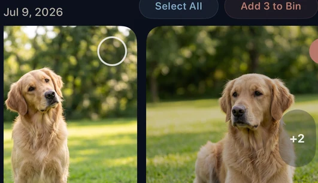

The short answer
Duplicate photos are copies of the same image or media. Similar photos are separate shots that look related, so differences in focus, expression, timing, framing, or personal meaning can determine which photo is worth keeping.
Duplicate photos and similar photos are not the same
Both can make a library feel repetitive, but they represent different decisions. An extra copy often adds no value. A separate photo from the same moment may contain the better expression, sharper focus, or the context you want to remember.
What counts as a duplicate photo?
An exact duplicate is another copy of the same photo or video. A near-duplicate may be a copy with a small edit, export change, or metadata difference. These groups are usually lower-risk than similar shots, but they still deserve review before removal.
What counts as a similar photo?
Similar photos are different captures that share a subject, scene, or moment. Examples include several pet photos, travel retakes, a selfie sequence, or multiple shots taken while someone’s expression changes.


| Type | Example | Cleanup risk |
|---|---|---|
| Exact duplicate | The same photo saved more than once. | Usually lower risk after review. |
| Near-duplicate | Two versions with a small edit or metadata difference. | Moderate. Check which version you need. |
| Similar photo | Several separate shots from the same moment. | Higher. Visual and personal differences can matter. |
Why similar photos require human judgment
A similar-photo group can contain the strongest and weakest pictures from the same moment. Automatic deletion can make the wrong choice because image similarity does not understand which expression you prefer, why a favorite matters, or whether an edit was intentional.
How to choose the best shot for you
Use the group as a comparison aid, then make the decision yourself:
| Check | What to compare |
|---|---|
| Focus | Zoom in when sharpness is unclear. |
| Expression | Compare faces, eyes, and timing. |
| Framing | Look for unwanted crops or distractions. |
| Motion | Check for blur and missed moments. |
| Personal value | Keep favorites, meaningful context, and intentional edits. |
How CleanLens groups similar photos for review
CleanLens surfaces likely related shots in small groups and shows the group date and item count. It does not decide which memory is disposable. You compare the set, choose what to keep, and decide which selected items move to the Bin.
Best rule: use smart detection to find the group, not to decide what memories are disposable.
A safe workflow for clearing repeated shots
- Open one similar-photo group.
- Compare focus, expressions, framing, motion, favorites, and edits.
- Keep every photo that has distinct value.
- Move only reviewed choices to the Bin.
- Check the Bin again before requesting deletion through iOS.
For a broader sequence, follow the safe iPhone photo cleanup process. If your main issue is exact copies, read how to delete duplicate photos on iPhone or see the Apple Photos Duplicates comparison.
Frequently asked questions
What is the difference between similar and duplicate photos?
Duplicates are copies of the same media. Similar photos are different shots that share a subject, scene, or moment.
Should similar photos be deleted automatically?
Similar photos should be reviewed because small differences in focus, expression, framing, and meaning can matter.
Why does Apple Photos not show every repeated shot as a duplicate?
Apple’s Duplicates feature is intended for duplicate items. Repeated but non-identical shots may not belong in the same category.
How do I decide which similar photo to keep?
Compare sharpness, expressions, framing, motion blur, favorites, edits, and the personal importance of each image.
Keep the final decision
Compare similar shots before deciding.
CleanLens groups likely related photos so you can inspect the set, keep what matters, and move only chosen items to the Bin.